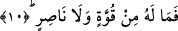

kabilindendir. Çünkü deneme bilmek, temyiz etmek, ayırmak için yapılır. Allah
Teâlâ’nın kullarını emir ve yasaklarla denemesi onların hakkında ezelde bilmiş olduğu
bilgisini ortaya çıkarmak içindir. Bazı âlimlere göre “es-serair” kelimesinden maksad
“sırlar” değil oruç, namaz, zekat ve cünüblükten boy abdesti almak gibi bir takım
farzlardır. Çünkü bu ibâdetler kul ile Rabbi arasında bir sır mâhiyetindedir. Kul
dünyada iken bu ibâdetleri yapmadığı halde dilerse “ben bunları yaptım” diyebilir. Şu
halde Rabbi ile kul arasında bir sır olan bu farzların yapılıp, yapılmadığı kıyamet günü
ortaya çıkacaktır.
İbn Ömer (r.a.) şöyle diyor: Allah Teâlâ kıyamet günü bütün sırları ortaya döker.
Böylece bu sırların bazıları yüz akı olurken, bazıları yüz karası olur. Bir başka ifâdeyle
emanetleri yerine getiren kimsenin yüzü pırıl pırıl parlarken bunları yapmayanın yüzü
tozlu ve kapkara olur.
10. İnsan için ne bir güç ne de bir yardımcı vardır.
“İnsanın o gün” başına gelen azabı kendisinden savacak, kendi nefsinde “ne bir
gücü vardır ne de” kendisine yardımcı olacak hariçten “bir yardımcısı.” Çünkü o gün
her nefis kendi yaptıkları ve kazandıklarıyla ilgili hayır veya şer, iyi veya kötü başına
gelen âkıbet ile meşguldür. Okuduğumuz âyette yer alan ve olmayacağı bildirilen
“kuvvet”ten maksad mutlak kuvvet değil, insanın nefsinde sâbit olan kuvvettir. Bir başka
ifâdeyle olmayacağı bildirilen kuvvet nefiste sâbit olan kuvvettir. Yoksa “velâ nâsır”
kelimesinin söylenmesi lüzumsuz kalırdı. Çünkü “vela nâsır” ifâdesiyle nefsin dışında
hariçteki kuvvet kasdedilmiş olur. Çünkü başkalarından elde edilmiş kuvvet de kuvvet
sayılır. Dolayısıyla bu âyette önce insanın nefsinde kuvvet olmayacağı, sonra da
hariçten herhangi bir kuvvet alamayacağı vurgulanmış olmaktadır. “Kuvvet” bünyenin
güçlü, sert ve katı olmasıdır. Bu özellik zaafın tam zıddıdır.
et-Tarifat’ta kuvvet; canlı olan varlığın güç olan fiilleri yapabilmesi olarak tarif
ediliyor. Mazlum olan yâni zulme uğramış bir kimseye yapılan yardıma Arapça’da iane
deniyor. Nasara kelimesi kullanıldığında ise mânâ onu kurtardı demek oluyor. Şu halde
âyette geçen “nasır” kelimesi kişiyi kurtarıcı, yakasını başına gelecek cezâdan kurtarıcı,
uzaklaştırıcı demek oluyor.
Bu âyet-i kerimede kuvvetin batındaki niyyet ve zâhiren yapılan amele göre olacağına
işâret ediliyor. Amelsiz sırf mücerred ve yalın bir niyyet, niyyet eden kimseyi
kurtarabilir fakat bunun yanında bir de amel olursa bu daha güçlü olur.